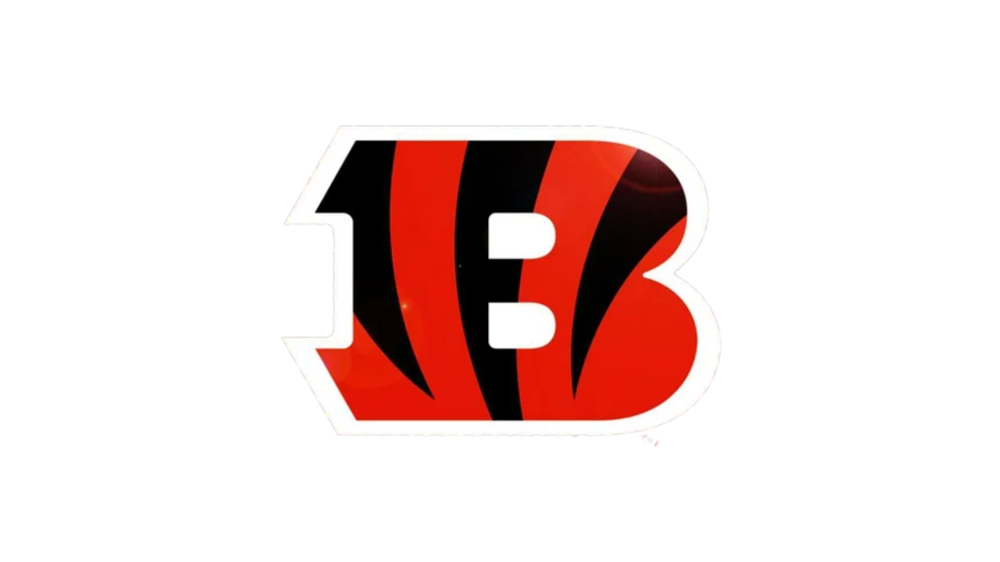

Here are some of the top wide recievers in the AFC North for your fantasy football team:
| Rank | Player | Team | Bye Week | Receptions | Yards | Touchdowns | Targets | FPTS |
|---|---|---|---|---|---|---|---|---|
| 1 | Ja'Marr Chase | Bengals | 12 | 127 | 1708 | 17 | 175 | 403 |
| 2 | Jerry Jeudy | Browns | 10 | 90 | 1229 | 4 | 145 | 240.9 |
| 3 | Zay Flowers | Ravens | 14 | 74 | 1059 | 4 | 116 | 209.5 |
| 4 | George Pickens | Steelers | 9 | 59 | 900 | 3 | 103 | 164.4 |
